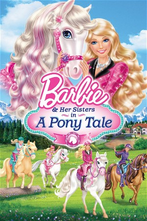

Barbie & Her Sisters in A Pony Tale (2013)
AnimationFamily
| Year | 2013 |
|---|---|
| Rating | US:G / US:Rated G |
| Genre | Animation, Family |
Barbie, and her sisters set off to the Alps for a riding tournament at their Aunt's Academy, but when Skipper finds out the Academy is due to be sold they set out to win. Barbie is distracted by the myth of an ancient species of horses.